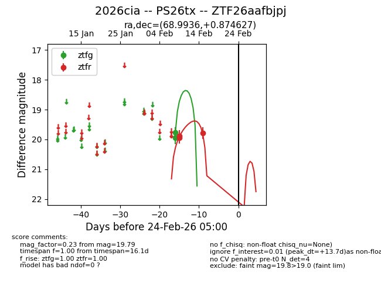
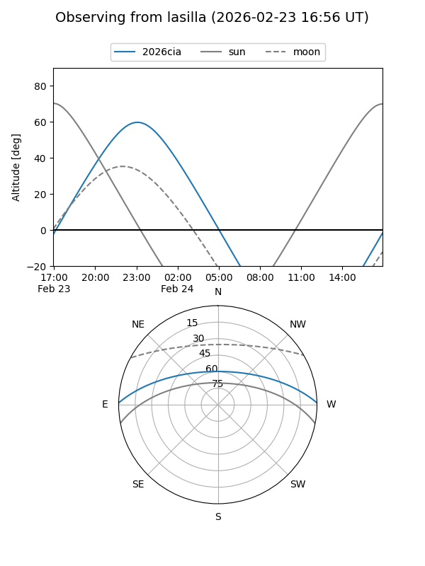
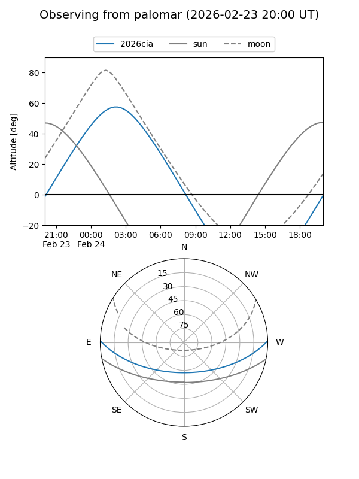

2026cia
Target 2026cia at 2026-02-24 09:08
Aliases and brokers:
FINK: link
Lasair: link
ALeRCE: link
TNS: link
YSE: link
alt names
ZTF26aafbjpj (ztf,fink_ztf)
2026cia (tns,yse)
PS26tx (panstarrs)
Coordinates:
equatorial (ra, dec) = 68.9936,+0.87463
equatorial (HMS+DMS) = 04:35:58.47,+00:52:28.66
galactic (l, b) = (195.0638,-29.27016)
Flags:
Photometry:
last ztfg=19.76, ztfr=19.79
2 ztfg, 3 ztfr detections
Lightcurve

Visibility


Additional plots